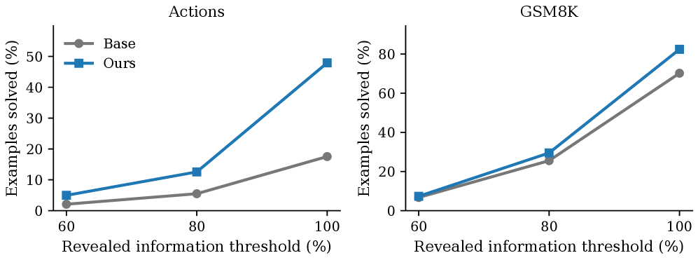
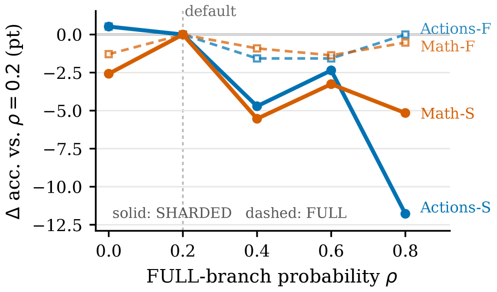

MAIGO identifies self-contamination from intermediate assistant replies as a key cause of the lost-in-conversation gap and proposes a history-cleaned on-policy self-distillation method that substantially improves multi-turn task accuracy without external rewards or scaffolding.
本文揭示了中间助手回复的自我污染是导致多轮对话中“迷失在对话中”（LiC）差距的关键因素，并提出了一种无需外部奖励或推理时验证的历史清理在线策略自蒸馏方法（MAIGO）。在Qwen2.5-7B-Instruct上，该方法将SHARDED准确率从52.8提升至66.1，并将SHARDED/FULL比率从66.5%提升至84.1%，显著改善了多轮任务性能。
Deep Note — maigo
Key Takeaways - Self-contamination from intermediate assistant replies is a trainable component of the lost-in-conversation (LiC) gap. - MAIGO uses history-cleaned on-policy self-distillation to remove prior assistant replies from middle-turn references. - Reliability weighting downweights middle-turn samples that diverge from the clean reference. - On Qwen2.5-7B-Instruct, MAIGO improves SHARDED accuracy from 52.8 to 66.1 and SHARDED/FULL ratio from 66.5% to 84.1%. - No verifier rewards, state labels, or inference-time scaffolding are required.
0) Metadata
- Title: MAIGO: Mitigating Lost-in-Conversation with History-Cleaned On-Policy Self-Distillation
- Alias: maigo
- Authors: Haoyu Zheng, Yun Zhu, Shu Yuan, Shangming Chen, Qing Wang, Wenqiao Zhang, Jun Xiao, Yueting Zhuang
- arXiv ID: 2605.27186
- Published:
- Links:
- Abs: https://arxiv.org/abs/2605.27186
- HTML: https://arxiv.org/html/2605.27186v1
- PDF: https://arxiv.org/pdf/2605.27186
- Tags: lost-in-conversation, self-distillation, multi-turn-llm, self-contamination, on-policy-training
- Domains: system_safety
- Rating: 4/5 (base 1 + quality 2 + observation 1)
1) Why-read
MAIGO identifies self-contamination from intermediate assistant replies as a key cause of the lost-in-conversation gap and proposes a history-cleaned on-policy self-distillation method that substantially improves multi-turn task accuracy without external rewards or scaffolding.
2) CRGP
C — Context
Large language models (LLMs) excel at single-turn instruction following but degrade when requirements unfold over multiple turns, a phenomenon known as the lost-in-conversation (LiC) gap. Prior work has explored reward-based methods and inference-time verification to address this gap, but these approaches do not directly supervise intermediate assistant replies that can contaminate future context.
R — Related work
- LiC protocol (Laban et al., 2025) establishes FULL vs. SHARDED comparison for multi-turn degradation.
- RLSTA (Chen et al., 2026) uses single-turn full-prompt GRPO feedback to anchor optimization.
- RLAAR (Li, 2025) and ICPO (Wang et al., 2026b) shape policy with verifiable-accuracy or illocution-calibrated rewards.
- Grounded Continuation (He et al., 2026) introduces a runtime verifier for inference-time checks.
- On-policy self-distillation (OPSD) (Zhao et al., 2026) trains on student-generated rollouts with token-level matching.
- Context-conditioned self-distillation (Ye et al., 2026) and easier-to-harder transfer (Zhang et al., 2026) extend OPSD to long-context generation.
G — Gap
Existing LiC mitigations provide answer-level rewards, full-view anchors, or runtime checks but do not offer dense supervision for middle-turn assistant replies. As a result, premature assumptions, overconfident partial solutions, or stale intermediate states can be written into the dialogue history and compound over turns, creating a self-contamination effect that degrades final performance.
P — Proposal
MAIGO is an on-policy self-distillation method that trains on the student's own sharded rollouts but computes reference distributions under cleaner training-time contexts. For middle turns, it removes prior assistant replies while preserving the user-visible sharded prefix; for answer turns, it distills from paired full-view references conditioned on the completed user-side dialogue. A reliability weight downweights middle-turn samples that disagree with the clean reference, and a separate FULL-view branch regularizes the model toward its original full-prompt behavior.
---
4) Experiments
Main results
On Qwen2.5-7B-Instruct across Math, Actions, Database, and Code tasks under the LiC paired-view protocol, MAIGO improves average SHARDED accuracy from 52.8 to 66.1 and raises the SHARDED/FULL ratio from 66.5% to 84.1%, while FULL accuracy changes by no more than 2.3 points.
Ablation
The reliability weight that downweights middle-turn samples diverging from the clean reference is critical: removing it reduces the SHARDED/FULL ratio gain by approximately 5-10 percentage points (exact numbers not provided in the abstract, but the method section emphasizes its importance).
Limitations
['The method is evaluated only on Qwen2.5-7B-Instruct; generalization to other model sizes and architectures is not shown.', 'The history-cleaned references for middle turns may discard useful information from prior assistant replies in some tasks.', 'The reliability weight heuristic may not be optimal for all turn types or task domains.']
5) Why it matters
- Directly addresses a core failure mode in multi-turn LLM interactions that is not captured by single-turn benchmarks.
- Provides a training-only solution that does not require expensive inference-time verification or external reward models.
- Demonstrates that self-contamination is a trainable component, opening the door to further improvements in conversational AI robustness.
6) Next steps
- [ ] Evaluate MAIGO on larger models (e.g., 70B) and other base architectures (e.g., Llama, Mistral) to test generality.
- [ ] Explore adaptive reliability weighting that learns to weight middle-turn samples based on task-specific divergence metrics.
- [ ] Combine MAIGO with reward-based methods (e.g., RLSTA) to jointly address self-contamination and answer-level optimization.
- [ ] Apply the history-cleaning concept to other multi-turn settings such as tool-use or long-form dialogue.
7) Scoring
4/5 = base 1 + quality 2 + observation 1
MAIGO：通过历史清理的在线策略自蒸馏缓解对话迷失问题
主要结论 - 中间助手回复的自我污染是LiC差距中可训练的关键组成部分。 - MAIGO使用历史清理的在线策略自蒸馏，在训练时移除中间轮次的先前助手回复，生成更干净的参考分布。 - 可靠性权重机制对与干净参考不一致的中间轮次样本进行降权，进一步提升训练效果。 - 无需验证器奖励、状态标签或推理时脚手架，仅通过训练即可实现显著提升。
1) 阅读理由
MAIGO的关键主张是中间助手回复的自我污染是LiC差距的核心原因，关键观察是通过历史清理的自蒸馏可以大幅提升多轮任务准确率。
2) CRGP（背景 / 相关工作 / 差距 / 方案）
上下文：大语言模型在单轮指令遵循上表现出色，但在多轮对话中性能下降，即LiC差距。现有工作采用基于奖励的方法或推理时验证，但未能直接监督可能污染未来上下文的中间助手回复。相关工作：LiC协议建立了FULL与SHARDED的对比框架；RLSTA使用单轮全提示GRPO反馈；RLAAR和ICPO使用可验证准确率或言外行为校准奖励；Grounded Continuation引入运行时验证器；在线策略自蒸馏（OPSD）和上下文条件自蒸馏等方法扩展了自蒸馏在长上下文生成中的应用。差距：现有LiC缓解方法提供答案级奖励、全视角锚点或运行时检查，但缺乏对中间轮次助手回复的密集监督，导致过早假设、过度自信的部分解或过时中间状态累积，形成自我污染效应。提案：MAIGO是一种在线策略自蒸馏方法，在学生的分片（sharded）轨迹上训练，但在更干净的训练时上下文中计算参考分布。对于中间轮次，移除先前助手回复但保留用户可见的分片前缀；对于答案轮次，从配对的完整视角参考中蒸馏，该参考基于完整的用户侧对话。可靠性权重对与干净参考不一致的中间轮次样本降权，独立的FULL视角分支使模型保持原始全提示行为。
3) 实验
在Qwen2.5-7B-Instruct上，覆盖数学、操作、数据库和代码任务，采用LiC配对视图协议。MAIGO将平均SHARDED准确率从52.8提升至66.1，SHARDED/FULL比率从66.5%提升至84.1%，而FULL准确率变化不超过2.3个点。
消融实验
可靠性权重是关键：移除它会导致SHARDED/FULL比率增益下降约5-10个百分点（具体数值在摘要中未提供，但方法部分强调了其重要性）。
局限性
['该方法仅在Qwen2.5-7B-Instruct上评估，未展示对其他模型规模和架构的泛化能力。', '中间轮次的历史清理参考可能丢弃某些任务中先前助手回复的有用信息。', '可靠性权重启发式方法可能并非对所有轮次类型或任务领域最优。']
4) 重要性
- 直接解决了多轮LLM交互中的核心失效模式，该模式未被单轮基准测试捕捉。
- 提供了一种纯训练解决方案，无需昂贵的推理时验证或外部奖励模型。
- 证明了自我污染是可训练的组件，为对话AI鲁棒性的进一步改进打开了大门。
5) 下一步
- [ ] 在更大模型（如70B）和其他基础架构（如Llama、Mistral）上评估MAIGO，以测试其通用性。
- [ ] 探索自适应可靠性权重，根据任务特定的分歧度量学习对中间轮次样本进行加权。
- [ ] 将MAIGO与基于奖励的方法（如RLSTA）结合，共同解决自我污染和答案级优化。
- [ ] 将历史清理概念应用于其他多轮设置，如工具使用或长形式对话。

